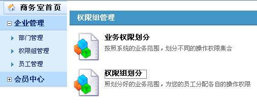
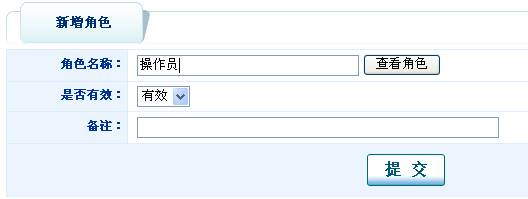
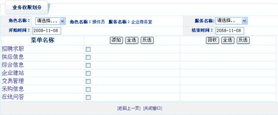
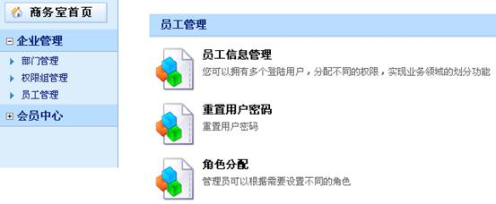
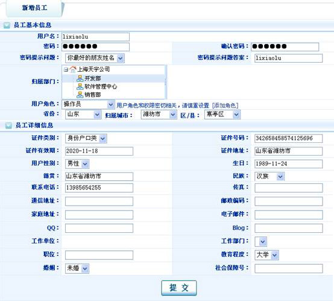

如何让我的销售员来自己操作该平台
| 可在“企业中心”下“企业管理”下“员工管理”中“员工信息管理”页面添加员工并分配某个角色。销售员可以以增加的用户名和密码登陆进入管理平台。 具体操作如下： 添加角色： |
|  |
| 打开“权限组划分”页面，点击“点击新增” |
|  |
| 修改和删除： 打开“权限组划分”页面，可直接进行修改和删除 |
 |
| 业务权限划分：根据角色设定权限，这样当角色被分配给某个员工时，这个员工拥有这个角色所有的权限。 给角色“后台管理”分配企业商务室下所有权限： 打开“业务权限划分”页面，选择角色名称：后台管理，服务名称：企业商务室： |
|  |
| 点击“全选”“ 添加”分配所有权限 |
 |
| 添加员工： |
|  |
| 打开“员工信息管理”页面，点击 |
|  |
| 在添加新员工时，给员工选择某个用户角色（例：操作员），添加完成后这个员工将有这个角色（例：操作员）被分配的所有权限（操作员在上面分配了企业商务室的所有权限，则这个员工也享有这些权限）。 员工信息管理：修改和删除 打开“员工信息管理”页面，点击修改或删除按钮即可操作。 |